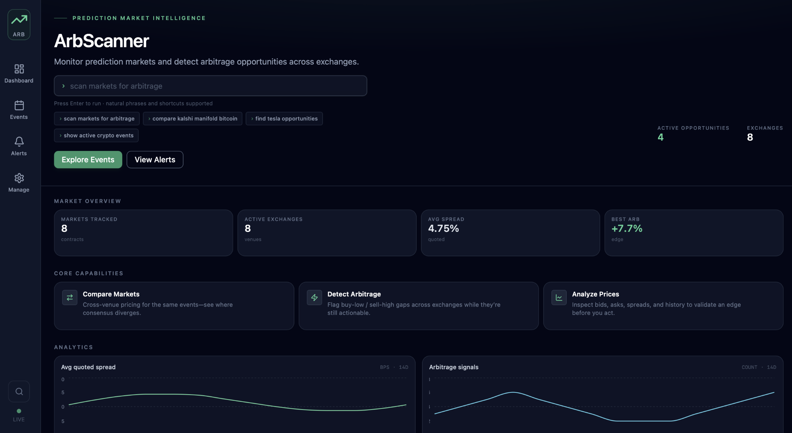

ArbScanner — Prediction Market Arbitrage Platform
A full-stack platform that aggregates prediction markets across multiple exchanges, detects potential arbitrage opportunities, and provides operators with real-time market insights through an interactive dashboard.
Problem & Context
Prediction markets are fragmented across multiple exchanges, making it difficult to compare equivalent contracts and identify pricing inefficiencies. ArbScanner brings these markets together into a single platform, automatically mapping related events and highlighting potential arbitrage opportunities for further investigation.
What It Does
- Multi-exchange aggregation — Syncs markets from Polymarket, Manifold, and Kalshi into a single catalog
- Market matching — Maps semantically equivalent contracts across venues so they can be compared directly
- Arbitrage detection — Runs a deterministic engine over trusted mappings and raises alerts on negative-risk spreads
- Interactive dashboard — React interface for browsing events, mappings, and active alerts
- REST API — FastAPI backend exposing the catalog, mappings, and alerts to any client

Tech Stack
Architecture / How It Works
Sync jobs periodically pull markets from each supported exchange and normalize them into a shared schema stored in MySQL. Equivalent contracts are matched across venues using deterministic title and alias rules, with optional Gemini-assisted matching for harder cases. The arbitrage engine then evaluates only the trusted mappings and records any opportunities it finds. Everything is served through the FastAPI backend and consumed by the React dashboard, with the frontend hosted on Vercel, the API on Render, and the database on Railway.
Key Takeaways
ArbScanner covers a full production slice: relational schema design for multi-venue market data, a REST API over that data, integration of several independent third-party sources with inconsistent formats, and a deployed frontend, API, and database split across Vercel, Render, and Railway. The matching layer was the most interesting constraint — mapping contracts conservatively matters more than mapping many of them, since a wrong mapping produces a false opportunity.